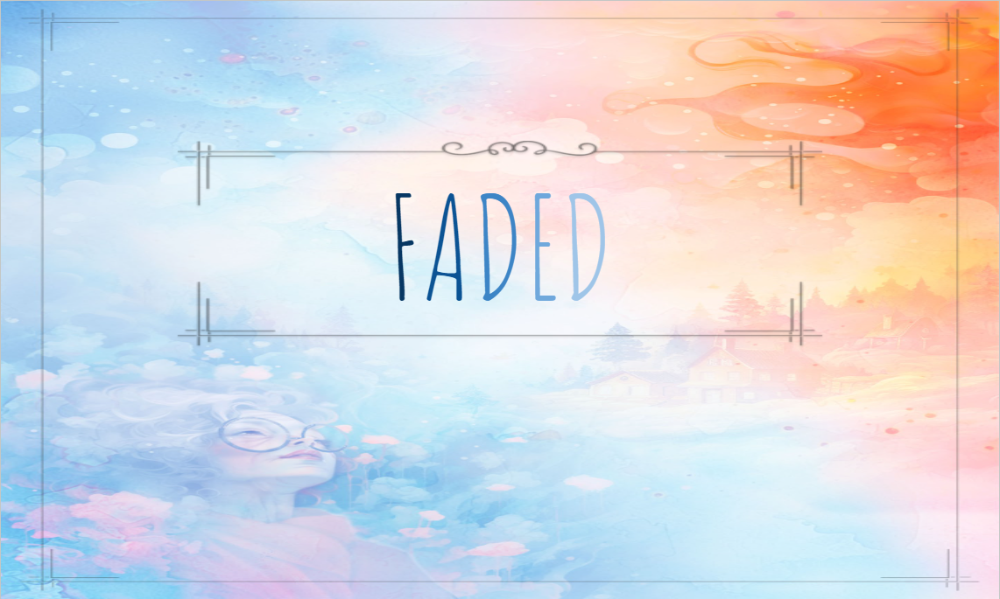

Faded

Project
Faded is a narrative runner in which you take on the role of an aging protagonist desperately trying to piece together the fragments of his lost memory, revealing forgotten recollections at every step of this emotional adventure.
Personal feedback
During my third year of study in Game Design, I had the opportunity to participate in an immersion internship as a game designer. The duration of the internship was one week and was conducted remotely (Gather.Town). During this internship period, I was able to work in a team with other students to produce a "Pitch Deck" to provide to our tutor.